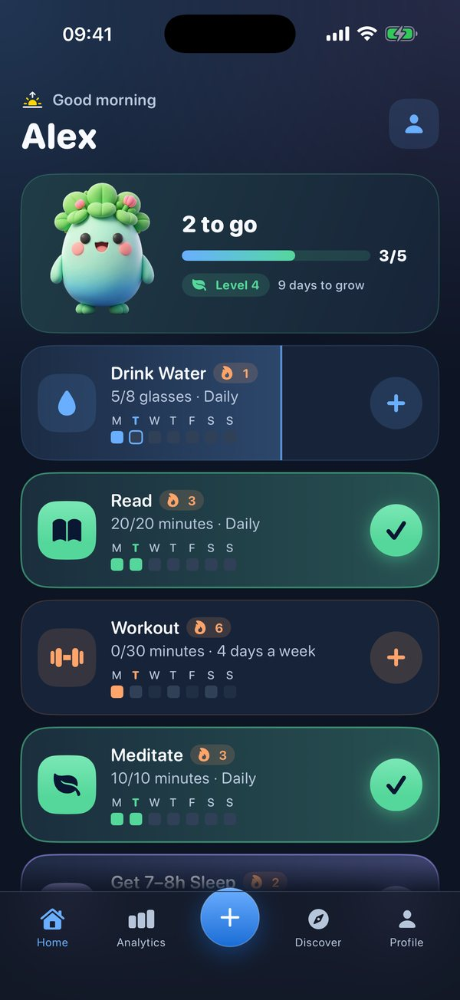
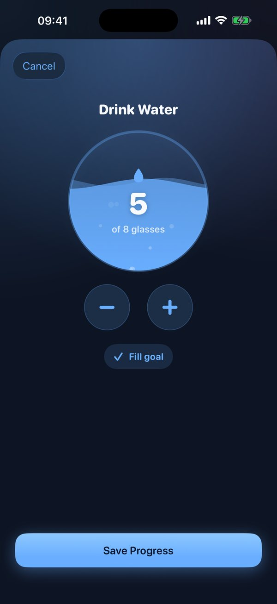

Small habits. Big change.
Filiz is a little sprout that grows every time you keep a habit. Show up for 66 days and watch it bloom.
Free to start. For iPhone and Apple Watch.
Log a habit in one tap
No streak-shaming, no complicated setup. Check things off and Filiz cheers you on.
- 1
Answer three questions
Tell Filiz what you want to improve and when your day has room. You get a starter plan in a minute.
- 2
Check off your day
Tap once for done, or fill up glasses of water and minutes of reading. Filiz celebrates when the day is complete.
- 3
Watch it grow
Every day you show up counts toward the next stage. Miss one and Filiz just gets a little thirsty. Growth is never lost.


Filiz goes where you go
Keep your habits in view without opening the app.
Dynamic Island and Lock Screen
See what's left today and log the next habit right from the island.
Home Screen widgets
Check off habits with a tap, and keep Filiz on your Home Screen.
Apple Watch
Log from your wrist and add Filiz to your watch face.
Apple Health
Steps, water, workouts, mindful minutes and sleep fill in by themselves.
Siri and Shortcuts
Say "Log Drink Water in Filiz" and it's done.
Private by design
No account. Your habits stay on your iPhone.
Semra's Garden
Every 66 days of showing up, the Filiz you grew blooms into a flower and is planted in your garden. Then a new sprout begins.
The first flower in every garden is Semra, a crown of tulips. Semra was my mother, and tulips were her flower. Filiz means "sprout" in Turkish, and this app is how I keep her close: in the place where small, patient effort turns into something beautiful.
Made with love, in memory of Semra.Free to grow. Pro to flourish.
Start for free. Upgrade when you want more room.
Free
Forever
- Up to five habits
- Filiz, streaks and celebrations
- Widgets, Apple Watch and Dynamic Island
- Semra and Sunny in your garden
Pro
Monthly or yearly, with a 7-day free trial on the yearly plan
- Unlimited habits
- Your full progress history
- Personal insights
- All six flowers and extra app icons
Questions
What happens if I miss a day?
Filiz never shrinks. Your growth is based on all the days you've shown up, so a missed day only makes Filiz a little thirsty until your next check-off.
Why 66 days?
Research from University College London found that a new habit takes about 66 days on average to become automatic. Filiz blooms right on time.
Do I need an account?
No. Filiz works without an account and keeps your habits on your iPhone.
Does Filiz read my health data?
Only if you connect Apple Health, and only to fill in the habits you link. Filiz never writes to Health and your data never leaves your device.
Plant your first habit today
It takes a minute to start, and Filiz will be with you every day after.